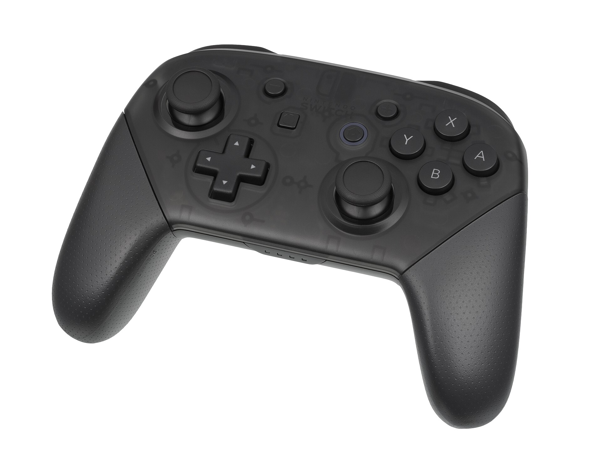

Cutsway um, edits gaming like, videos, streams so basically and podcasts you know, without uh, the dead air
An editing and social media studio for gaming creators. We cut what slows you down, and post what is left.
Book a callPaste a rant. Watch it tighten.
What we cut and for whom
Gaming videos
Loading screens, deaths that go nowhere, the twenty minutes of looting. What stays is the story. 48h

Stream VODs
Eight hours live, one highlight video and ten shorts from the parts chat lost it over. 48h

Podcasts
Crosstalk, ums, the coughs and the tangents. A clean episode and six clips to find new listeners. 72h

Shorts & thumbs
Vertical cuts, captions timed to each word, and three thumbnail options per video. 8–24h

Fair questions
Will I still sound like me?
Yes. We cut filler, not personality. The tangent people love stays in.
What do I send?
Everything raw. Sorting the pile is the job.
How many revisions?
Two rounds per edit, left as notes on the exact second.
Who posts it?
We can: titles, captions and a schedule on four platforms.
How fast?
8 to 72 hours depending on the job. Sample times, confirmed when you book.
Do I keep one editor?
Yes. Same person, every upload, learning your channel.